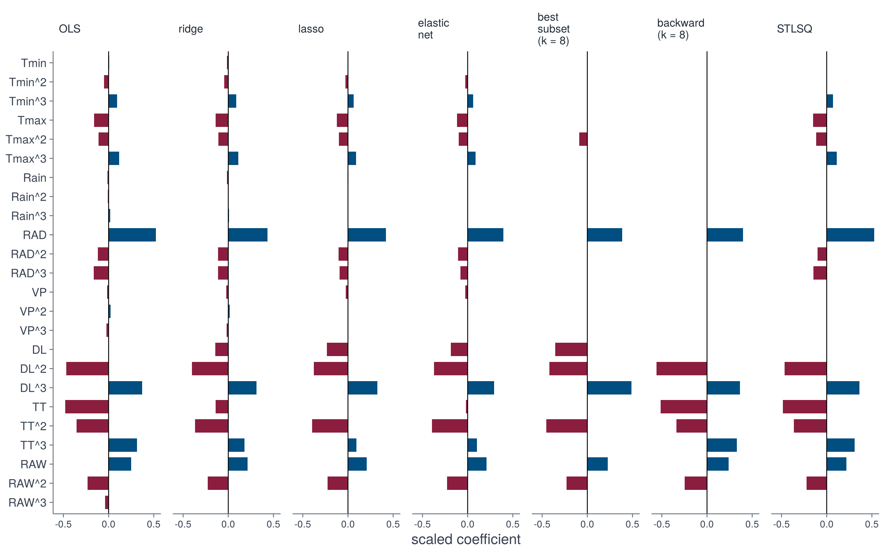

design <- make_design(Theta, tr, "g001")4 · Fitting
So far, we constructed the library of candidate terms \(\boldsymbol{\Theta}\) and the growth rates \(\dot{\mathbf{y}}\). The next step is to find the coefficients \(\boldsymbol{\xi}\) that best explain the growth rates as a linear combination of the terms:
\[ \dot{\mathbf{y}} \approx \boldsymbol{\Theta}\boldsymbol{\xi}. \]
We are free to choose any method to fit the coefficients. The methods differ in how they handle correlated terms, and in whether they produce sparse equations (with some coefficients set exactly to zero).
design = make_design(Theta, tr, "g001")Methods
Reference model. OLS does not impose any sparsity.
\[ \hat{\boldsymbol{\xi}} = \arg\min_{\boldsymbol{\xi}} \; \lVert \dot{\mathbf{y}} - \boldsymbol{\Theta}\boldsymbol{\xi} \rVert_2^2 \]
Hyperparameters: none.
R: lm.fit. Python: numpy.linalg.lstsq.
fit_ols <- function(Theta, dy) {
Z <- cbind(`1` = 1, Theta)
drop(solve(crossprod(Z), crossprod(Z, dy)))
}def fit_ols(Theta, dy):
return np.linalg.lstsq(np.column_stack([np.ones(len(dy)), Theta]), dy,
rcond=None)[0]Shrinks the coefficients towards zero. This can help to deal with collinearity, but does not produce a sparse equation.
\[ \hat{\boldsymbol{\xi}} = \arg\min_{\boldsymbol{\xi}} \; \lVert \dot{\mathbf{y}} - \boldsymbol{\Theta}\boldsymbol{\xi} \rVert_2^2 + \lambda \lVert \boldsymbol{\xi} \rVert_2^2 \]
Hyperparameters:
- \(\lambda\): strength of the penalty; shrinks the coefficients.
Closed form, with the penalty scaled as in glmnet.
## Ridge in closed form, with the penalty scaling of glmnet.
fit_ridge <- function(Theta, dy, lambda = 1e-3) {
n <- nrow(Theta); mx <- colMeans(Theta)
var_x <- col_sd(Theta)^2 * (n - 1) / n
sy <- sd(dy) * sqrt((n - 1) / n)
b <- solve(crossprod(Theta) / n - tcrossprod(mx) + diag(lambda / sy * var_x),
crossprod(Theta, dy) / n - mx * mean(dy))
c(`1` = mean(dy) - sum(mx * b), setNames(drop(b), colnames(Theta)))
}# Ridge: closed form, same scaling.
def fit_ridge(Theta, dy, lam=1e-3):
sx = Theta.std(axis=0)
Z = (Theta - Theta.mean(axis=0)) / sx
A = Z.T @ Z / len(dy) + lam / dy.std() * np.eye(Theta.shape[1])
b = np.linalg.solve(A, Z.T @ (dy - dy.mean()) / len(dy)) / sx
return np.concatenate([[dy.mean() - Theta.mean(axis=0) @ b], b])The \(\ell_1\) penalty shrinks the coefficients and sets some to zero, producing a sparse equation.
\[ \hat{\boldsymbol{\xi}} = \arg\min_{\boldsymbol{\xi}} \; \lVert \dot{\mathbf{y}} - \boldsymbol{\Theta}\boldsymbol{\xi} \rVert_2^2 + \lambda \lVert \boldsymbol{\xi} \rVert_1 \]
Hyperparameters:
- \(\lambda\): strength of the penalty.
R: glmnet. Python: scikit-learn ElasticNet, with the penalty scaled as in glmnet.
## Lasso and elastic net by glmnet.
fit_glmnet <- function(Theta, dy, alpha, lambda) {
fit <- glmnet::glmnet(Theta, dy, alpha = alpha, lambda = lambda,
type.gaussian = "covariance")
named(as.vector(coef(fit)), Theta)
}
fit_lasso <- function(Theta, dy, lambda = 3e-4) fit_glmnet(Theta, dy, 1, lambda)# Lasso and elastic net, with the penalty scaling of glmnet.
def fit_glmnet(Theta, dy, alpha, lam):
sx = Theta.std(axis=0)
l1, l2 = lam * alpha, lam * (1 - alpha) / dy.std()
model = ElasticNet(alpha=l1 + l2, l1_ratio=l1 / (l1 + l2), tol=1e-12,
max_iter=100000, precompute=True)
model.fit((Theta - Theta.mean(axis=0)) / sx, dy - dy.mean())
b = model.coef_ / sx
return np.concatenate([[dy.mean() - Theta.mean(axis=0) @ b], b])
def fit_lasso(Theta, dy, lam=3e-4):
return fit_glmnet(Theta, dy, 1, lam)A mix of ridge and lasso: sparse like the lasso, but more stable for correlated terms.
\[ \hat{\boldsymbol{\xi}} = \arg\min_{\boldsymbol{\xi}} \; \lVert \dot{\mathbf{y}} - \boldsymbol{\Theta}\boldsymbol{\xi} \rVert_2^2 + \lambda \Bigl( \tfrac{1 - \alpha}{2} \lVert \boldsymbol{\xi} \rVert_2^2 + \alpha \lVert \boldsymbol{\xi} \rVert_1 \Bigr) \]
Hyperparameters:
- \(\lambda\): strength of the penalty.
- \(\alpha\): mix ratio of the two penalties (here 0.5).
## Lasso and elastic net by glmnet.
fit_glmnet <- function(Theta, dy, alpha, lambda) {
fit <- glmnet::glmnet(Theta, dy, alpha = alpha, lambda = lambda,
type.gaussian = "covariance")
named(as.vector(coef(fit)), Theta)
}
fit_enet <- function(Theta, dy, lambda = 6e-4) fit_glmnet(Theta, dy, 0.5, lambda)# Lasso and elastic net, with the penalty scaling of glmnet.
def fit_glmnet(Theta, dy, alpha, lam):
sx = Theta.std(axis=0)
l1, l2 = lam * alpha, lam * (1 - alpha) / dy.std()
model = ElasticNet(alpha=l1 + l2, l1_ratio=l1 / (l1 + l2), tol=1e-12,
max_iter=100000, precompute=True)
model.fit((Theta - Theta.mean(axis=0)) / sx, dy - dy.mean())
b = model.coef_ / sx
return np.concatenate([[dy.mean() - Theta.mean(axis=0) @ b], b])
def fit_enet(Theta, dy, lam=6e-4):
return fit_glmnet(Theta, dy, 0.5, lam)The best model with exactly \(k\) terms, found by searching all subsets. This is the most expensive method, as the number of subsets grows combinatorially with the number of terms.
\[ \hat{\boldsymbol{\xi}} = \arg\min_{\lVert \boldsymbol{\xi} \rVert_0 \le k} \; \lVert \dot{\mathbf{y}} - \boldsymbol{\Theta}\boldsymbol{\xi} \rVert_2^2 \]
Algorithm:
\[ \begin{array}{ll} \textbf{for each } S \subset \{1, \dots, K\} \textbf{ with } |S| = k: & \\[2pt] \quad \hat{\boldsymbol{\xi}}_S \leftarrow \arg\min_{\boldsymbol{\xi}} \lVert \dot{\mathbf{y}} - \boldsymbol{\Theta}_S\boldsymbol{\xi} \rVert_2^2 \\[2pt] \quad \mathrm{RSS}(S) \leftarrow \lVert \dot{\mathbf{y}} - \boldsymbol{\Theta}_S\hat{\boldsymbol{\xi}}_S \rVert_2^2 & \\[2pt] \textbf{return } \hat{\boldsymbol{\xi}}_{S^*} \text{ with } S^* = \arg\min_{S} \mathrm{RSS}(S) \end{array} \]
Hyperparameters:
- \(k\): number of terms that are kept.
## Best subset or backward elimination with k terms.
fit_subset <- function(Theta, dy, k = 8, method = "exhaustive") {
b <- coef(leaps::regsubsets(Theta, dy, nvmax = k, method = method), k)
full <- setNames(numeric(ncol(Theta) + 1), c("1", colnames(Theta)))
full[c("1", names(b)[-1])] <- b
full
}# Best subset or backward elimination with k terms, from the Gram matrix.
def fit_subset(Theta, dy, k=8, method="exhaustive"):
Tc, yc = Theta - Theta.mean(axis=0), dy - dy.mean()
G, c = Tc.T @ Tc, Tc.T @ yc
if method == "exhaustive":
subsets = np.array(list(combinations(range(Theta.shape[1]), k)))
blocks = G[subsets[:, :, None], subsets[:, None, :]]
b = np.linalg.solve(blocks, c[subsets][..., None])[..., 0]
keep = subsets[np.argmax((b * c[subsets]).sum(axis=1))]
else:
keep = np.arange(Theta.shape[1])
while len(keep) > k:
inv = np.linalg.inv(G[np.ix_(keep, keep)])
increase = (inv @ c[keep]) ** 2 / np.diag(inv)
keep = np.delete(keep, np.argmin(increase))
b = np.zeros(Theta.shape[1])
b[keep] = np.linalg.solve(G[np.ix_(keep, keep)], c[keep])
return np.concatenate([[dy.mean() - Theta.mean(axis=0) @ b], b])A greedy alternative to best subset: start with all terms and repeatedly remove the one that increases the residual error least.
\[ \begin{array}{ll} S \leftarrow \{1, \dots, K\} \\[2pt] \textbf{while } |S| > k: & \\[2pt] \quad \Delta_j \leftarrow \mathrm{RSS}(S \setminus \{j\}) - \mathrm{RSS}(S) \quad \text{for each } j \in S \\[2pt] \quad S \leftarrow S \setminus \{j^*\}, \quad j^* = \arg\min_{j \in S} \Delta_j \\[2pt] \textbf{return } \hat{\boldsymbol{\xi}}_S \end{array} \]
Hyperparameters:
- \(k\): number of terms that are kept.
## Best subset or backward elimination with k terms.
fit_subset <- function(Theta, dy, k = 8, method = "exhaustive") {
b <- coef(leaps::regsubsets(Theta, dy, nvmax = k, method = method), k)
full <- setNames(numeric(ncol(Theta) + 1), c("1", colnames(Theta)))
full[c("1", names(b)[-1])] <- b
full
}# Best subset or backward elimination with k terms, from the Gram matrix.
def fit_subset(Theta, dy, k=8, method="exhaustive"):
Tc, yc = Theta - Theta.mean(axis=0), dy - dy.mean()
G, c = Tc.T @ Tc, Tc.T @ yc
if method == "exhaustive":
subsets = np.array(list(combinations(range(Theta.shape[1]), k)))
blocks = G[subsets[:, :, None], subsets[:, None, :]]
b = np.linalg.solve(blocks, c[subsets][..., None])[..., 0]
keep = subsets[np.argmax((b * c[subsets]).sum(axis=1))]
else:
keep = np.arange(Theta.shape[1])
while len(keep) > k:
inv = np.linalg.inv(G[np.ix_(keep, keep)])
increase = (inv @ c[keep]) ** 2 / np.diag(inv)
keep = np.delete(keep, np.argmin(increase))
b = np.zeros(Theta.shape[1])
b[keep] = np.linalg.solve(G[np.ix_(keep, keep)], c[keep])
return np.concatenate([[dy.mean() - Theta.mean(axis=0) @ b], b])Sequential thresholded least squares, the algorithm of the original SINDy method.
\[ \begin{array}{ll} S \leftarrow \{1, \dots, K\} \\[2pt] \textbf{repeat:} & \\[2pt] \quad \hat{\boldsymbol{\xi}}_S \leftarrow \arg\min_{\boldsymbol{\xi}} \lVert \dot{\mathbf{y}} - \boldsymbol{\Theta}_S\boldsymbol{\xi} \rVert_2^2 \\[2pt] \quad S' \leftarrow \bigl\{ j \in S : |\hat{\xi}_j|\, s_j \ge \tau \bigr\}, \quad s_j = \mathrm{sd}(\boldsymbol{\Theta}_j) / \mathrm{sd}\bigl(\dot{\mathbf{y}}\bigr) \\[2pt] \quad \textbf{if } S' = S \text{ or } S' = \emptyset \textbf{ then stop, else } S \leftarrow S' & \\[2pt] \textbf{return } \hat{\boldsymbol{\xi}}_S \end{array} \]
Hyperparameters:
- \(\tau\): threshold on the scaled coefficient \(|\hat{\xi}_j|\,s_j\).
## Sequential thresholded least squares: refit, drop terms below the threshold.
fit_stlsq <- function(Theta, dy, threshold = 0.05) {
Z <- cbind(`1` = 1, Theta)
G <- crossprod(Z)
rhs <- drop(crossprod(Z, dy))
size <- col_sd(Theta) / sd(dy)
active <- colnames(Theta)
repeat {
i <- c("1", active)
b <- drop(solve(G[i, i], rhs[i]))
keep <- abs(b[-1]) * size[active] >= threshold
if (all(keep) || !any(keep)) break
active <- active[keep]
}
full <- setNames(numeric(ncol(Theta) + 1), c("1", colnames(Theta)))
full[names(b)] <- b
full
}# Sequential thresholded least squares: refit, drop terms below the threshold.
def fit_stlsq(Theta, dy, threshold=0.05):
size = Theta.std(axis=0, ddof=1) / dy.std(ddof=1)
active = np.arange(Theta.shape[1])
while True:
b = fit_ols(Theta[:, active], dy)
keep = np.abs(b[1:]) * size[active] >= threshold
if keep.all() or not keep.any():
break
active = active[keep]
full = np.zeros(Theta.shape[1] + 1)
full[0], full[1 + active] = b[0], b[1:]
return fullComparison
The methods fitted to the same data:
fits <- sapply(fit_methods, function(fit) fit(design$Theta, design$dy))
round(fits, 3)fits = pd.DataFrame({name: fit(design.Theta, design.dy)
for name, fit in fit_methods.items()},
index=["1"] + design.terms)
print(fits.round(3)) OLS ridge lasso elastic net best subset (k = 8) backward (k = 8)
1 0.165 0.161 0.159 0.159 0.158 0.161
Tmin 0.000 -0.001 0.000 0.000 0.000 0.000
Tmin^2 -0.003 -0.002 -0.001 -0.001 0.000 0.000
Tmin^3 0.002 0.002 0.001 0.001 0.000 0.000
Tmax -0.011 -0.009 -0.008 -0.008 0.000 0.000
Tmax^2 -0.006 -0.006 -0.005 -0.005 -0.005 0.000
Tmax^3 0.002 0.002 0.002 0.002 0.000 0.000
Rain -0.001 -0.001 0.000 0.000 0.000 0.000
Rain^2 0.000 0.000 0.000 0.000 0.000 0.000
Rain^3 0.000 0.000 0.000 0.000 0.000 0.000
RAD 0.035 0.029 0.028 0.027 0.026 0.027
RAD^2 -0.007 -0.007 -0.006 -0.006 0.000 0.000
RAD^3 -0.005 -0.003 -0.003 -0.002 0.000 0.000
VP -0.001 -0.002 -0.002 -0.002 0.000 0.000
VP^2 0.001 0.001 0.000 0.000 0.000 0.000
VP^3 0.000 0.000 0.000 0.000 0.000 0.000
DL 0.000 -0.010 -0.017 -0.013 -0.026 0.000
DL^2 -0.048 -0.041 -0.039 -0.038 -0.043 -0.057
DL^3 0.019 0.016 0.017 0.015 0.025 0.019
TT -0.034 -0.010 0.000 -0.001 0.000 -0.037
TT^2 -0.030 -0.032 -0.034 -0.034 -0.039 -0.029
TT^3 0.014 0.008 0.004 0.005 0.000 0.015
RAW 0.016 0.014 0.014 0.014 0.015 0.016
RAW^2 -0.015 -0.014 -0.014 -0.014 -0.014 -0.015
RAW^3 -0.001 0.000 0.000 0.000 0.000 0.000
STLSQ
1 0.163
Tmin 0.000
Tmin^2 0.000
Tmin^3 0.002
Tmax -0.010
Tmax^2 -0.006
Tmax^3 0.002
Rain 0.000
Rain^2 0.000
Rain^3 0.000
RAD 0.035
RAD^2 -0.006
RAD^3 -0.004
VP 0.000
VP^2 0.000
VP^3 0.000
DL 0.000
DL^2 -0.048
DL^3 0.018
TT -0.035
TT^2 -0.031
TT^3 0.014
RAW 0.014
RAW^2 -0.014
RAW^3 0.000We visualise the coefficients of the terms for each method on the same scale.
size <- apply(design$Theta, 2, sd) / sd(design$dy)
effect <- fits[-1, ] * size
effects <- data.frame(
term = factor(rownames(effect), rownames(effect)),
method = factor(
rep(colnames(effect), each = nrow(effect)),
colnames(effect)
),
effect = as.vector(effect)
)
effects <- effects[effects$effect != 0, ]
ggplot(effects, aes(term, effect, fill = effect > 0)) +
geom_col(width = 0.7) +
geom_hline(yintercept = 0, linewidth = 0.3) +
scale_fill_manual(
values = c(
`TRUE` = dgxe[["blue"]],
`FALSE` = dgxe[["burgundy"]]
),
guide = "none"
) +
scale_x_discrete(drop = FALSE) +
scale_y_continuous(breaks = c(-0.5, 0, 0.5)) +
facet_wrap(~method, ncol = 1) +
labs(x = NULL, y = "scaled coefficient") +
theme_dgxe() +
theme(
strip.text = element_text(size = 8),
axis.text.x = element_text(
size = 7, angle = 90, hjust = 1,
vjust = 0.5
)
)size = design.Theta.std(axis=0, ddof=1) / design.dy.std(ddof=1)
effect = fits.iloc[1:].mul(size, axis=0)
fig, axes = plt.subplots(effect.shape[1], 1, sharex=True, sharey=True,
figsize=(6.2, 6.2))
for ax, (name, column) in zip(axes, effect.items()):
ax.bar(column.index, column, color=np.where(column > 0, BLUE, BURGUNDY))
ax.axhline(0, color="black", lw=0.8)
ax.set_title(name, fontsize=8, loc="left")
axes[-1].tick_params(axis="x", rotation=90)
fig.supylabel("scaled coefficient")
fig.tight_layout()
Due to the different ways the methods handle correlated terms, they produce different equations.
Exploring a method
Here we compare some of the approaches. Switch genotypes on and off to compare their coefficients (top); the lower left panel shows the held-out error for all settings, as the mean over 20 genotypes, and the lower right panel the held-out trajectories of the selected genotypes for the current setting.